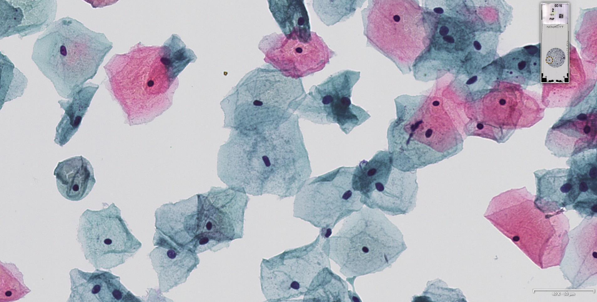
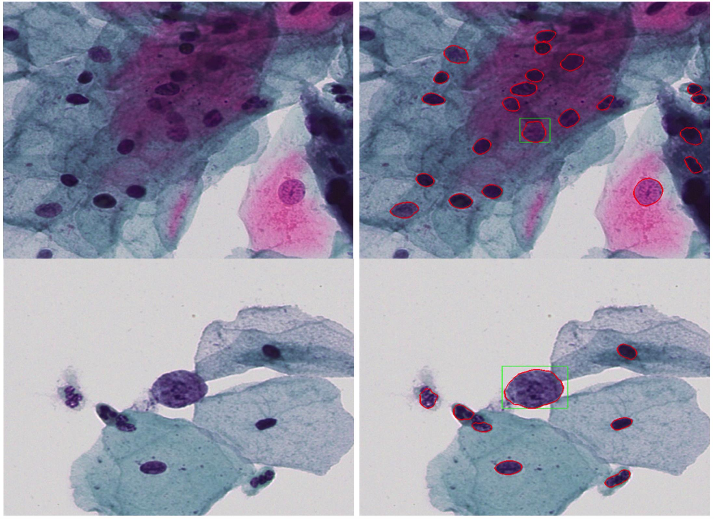

Traitement d'images dans la recherche contre le cancer
RetourTraitement d'images dans la recherche contre le cancer
La cytopathologie, ou étude des cellules malades, est aujourd'hui aidée par les outils numériques. Le GREYC, en partenariat avec le service d'anatomie pathologique du Centre Hospitalier Public du Cotentin, a développé des algorithmes de traitement d'images pour reconnaitre des cellules cancéreuses sur une photographie.
La première étape est de numériser les lames d'observation préparées en laboratoire.
Un logiciel de reconnaissance va ensuite localiser les noyaux des cellules et les classer grâce à une technique d'apprentissage machine : les réseaux de neurones artificiels. Le logiciel peut alors identifier les cellules cancéreuses.
